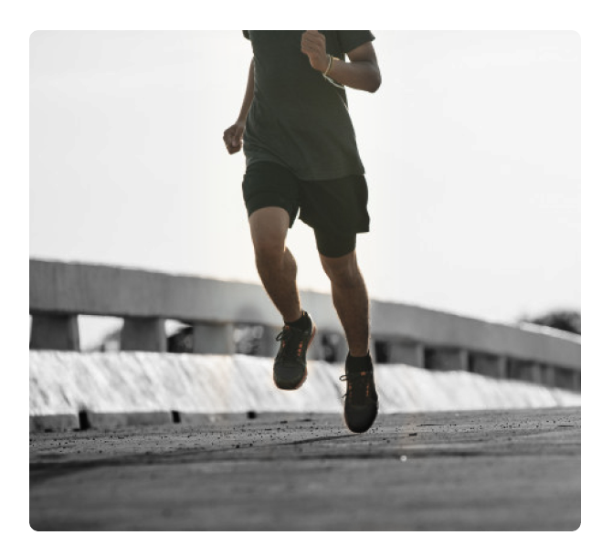

Vous n’êtes pas isolés de votre environnement
Piétons, cyclistes, coureurs et autres sportifs... vous pouvez écouter votre musique ou téléphoner tout en entendant les bruits environnants (la rue, la route,...). Les casques à conduction osseuse Run'Zik vous aident à garder conscience des dangers éventuels. Vous augmentez donc votre sécurité ainsi que vos capacités de communication avec vos proches et vos collègues.
